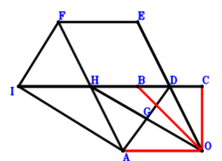
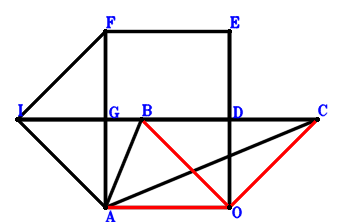
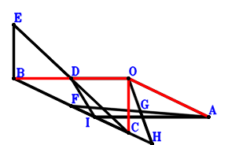
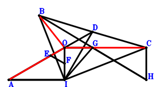
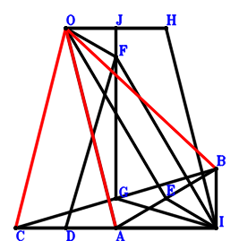

Exercise 1829： Let FAOE be a parallelogram. D is the midpoint of EO and BC. G is the midpoint of AD and HO. FI⊥IA. I, B, C are collinear and I, H, D are collinear. IB\(\cdot\)IC=2\(\cdot\)IH\(\cdot\)ID. Prove that \(AO^{2}=\dfrac{BO^{2}}{2} + \dfrac{CO^{2}}{2}\).

\(\because \) D is the midpoint of BC \(\therefore \small\overrightarrow{OD}=\dfrac{\small\overrightarrow{OB}}{2} + \dfrac{\small\overrightarrow{OC}}{2}\).\(\because \) D is the midpoint of EO \(\therefore \small\overrightarrow{OE}=2 \small\overrightarrow{OD}=\small\overrightarrow{OB} + \small\overrightarrow{OC}\).\(\because \) FAOE is a parallelogram \(\therefore \small\overrightarrow{OF}=\small\overrightarrow{OA} + \small\overrightarrow{OB} + \small\overrightarrow{OC}\).\(\because \) G is the midpoint of AD \(\therefore \small\overrightarrow{OG}=\dfrac{\small\overrightarrow{OA}}{2} + \dfrac{\small\overrightarrow{OD}}{2}=\dfrac{\small\overrightarrow{OA}}{2} + \dfrac{\small\overrightarrow{OB}}{4} + \dfrac{\small\overrightarrow{OC}}{4}\).\(\because \) G is the midpoint of HO \(\therefore \small\overrightarrow{OH}=2 \small\overrightarrow{OG}=\small\overrightarrow{OA} + \dfrac{\small\overrightarrow{OB}}{2} + \dfrac{\small\overrightarrow{OC}}{2}\).\(\because \) FI⊥IA \(\therefore \small\overrightarrow{AI} \cdot \small\overrightarrow{FI}=\left(- \small\overrightarrow{OA} + \small\overrightarrow{OI}\right) \cdot \left(- \small\overrightarrow{OF} + \small\overrightarrow{OI}\right)=\left(- \small\overrightarrow{OA} + \small\overrightarrow{OI}\right) \cdot \left(- \small\overrightarrow{OA} - \small\overrightarrow{OB} - \small\overrightarrow{OC} + \small\overrightarrow{OI}\right)=\small\overrightarrow{OA}^{2} + \small\overrightarrow{OA} \cdot \small\overrightarrow{OB} + \small\overrightarrow{OA} \cdot \small\overrightarrow{OC} - 2 \small\overrightarrow{OA} \cdot \small\overrightarrow{OI} - \small\overrightarrow{OB} \cdot \small\overrightarrow{OI} - \small\overrightarrow{OC} \cdot \small\overrightarrow{OI} + \small\overrightarrow{OI}^{2}=0\) . . . . . . \(①\)\(\because \) I, B, C are collinear and I, H, D are collinear. IB\(\cdot\)IC=2\(\cdot\)IH\(\cdot\)ID \(\therefore - \small\overrightarrow{BI} \cdot \small\overrightarrow{CI} + 2 \small\overrightarrow{DI} \cdot \small\overrightarrow{HI}=- \left(- \small\overrightarrow{OB} + \small\overrightarrow{OI}\right) \cdot \left(- \small\overrightarrow{OC} + \small\overrightarrow{OI}\right) + 2 \left(- \small\overrightarrow{OD} + \small\overrightarrow{OI}\right) \cdot \left(- \small\overrightarrow{OH} + \small\overrightarrow{OI}\right)=- \left(- \small\overrightarrow{OB} + \small\overrightarrow{OI}\right) \cdot \left(- \small\overrightarrow{OC} + \small\overrightarrow{OI}\right) + 2 \left(- \dfrac{\small\overrightarrow{OB}}{2} - \dfrac{\small\overrightarrow{OC}}{2} + \small\overrightarrow{OI}\right) \cdot \left(- \small\overrightarrow{OA} - \dfrac{\small\overrightarrow{OB}}{2} - \dfrac{\small\overrightarrow{OC}}{2} + \small\overrightarrow{OI}\right)=\small\overrightarrow{OA} \cdot \small\overrightarrow{OB} + \small\overrightarrow{OA} \cdot \small\overrightarrow{OC} - 2 \small\overrightarrow{OA} \cdot \small\overrightarrow{OI} + \dfrac{\small\overrightarrow{OB}^{2}}{2} - \small\overrightarrow{OB} \cdot \small\overrightarrow{OI} + \dfrac{\small\overrightarrow{OC}^{2}}{2} - \small\overrightarrow{OC} \cdot \small\overrightarrow{OI} + \small\overrightarrow{OI}^{2}=0\) . . . . . . \(②\)In conclusion, \(\small\overrightarrow{OA}^{2} - \dfrac{\small\overrightarrow{OB}^{2}}{2} - \dfrac{\small\overrightarrow{OC}^{2}}{2}=①-②=0\), that is, \(AO^{2}=\dfrac{BO^{2}}{2} + \dfrac{CO^{2}}{2}\).
Exercise 1957： Let HOJI be a parallelogram. BODE is a trapezoid with BE//OD and BE=2OD. D, F are the midpoints of CA, EA, respectively. G is the midpoint of CB and HO. IA⊥AJ, CI⊥IB and GI⊥IF. Prove that \(OA^{2}=\dfrac{BO^{2}}{2} + \dfrac{CO^{2}}{2}\).
\(\because \) D is the midpoint of CA \(\therefore \small\overrightarrow{OD}=\dfrac{\small\overrightarrow{OA}}{2} + \dfrac{\small\overrightarrow{OC}}{2}\).\(\because \) BE//OD and BE=2OD \(\therefore \small\overrightarrow{OE}=\small\overrightarrow{OB} + 2 \small\overrightarrow{OD}=\small\overrightarrow{OA} + \small\overrightarrow{OB} + \small\overrightarrow{OC}\).\(\because \) F is the midpoint of EA \(\therefore \small\overrightarrow{OF}=\dfrac{\small\overrightarrow{OA}}{2} + \dfrac{\small\overrightarrow{OE}}{2}=\small\overrightarrow{OA} + \dfrac{\small\overrightarrow{OB}}{2} + \dfrac{\small\overrightarrow{OC}}{2}\).\(\because \) G is the midpoint of CB \(\therefore \small\overrightarrow{OG}=\dfrac{\small\overrightarrow{OB}}{2} + \dfrac{\small\overrightarrow{OC}}{2}\).\(\because \) G is the midpoint of HO \(\therefore \small\overrightarrow{OH}=2 \small\overrightarrow{OG}=\small\overrightarrow{OB} + \small\overrightarrow{OC}\).\(\because \) HOJI is a parallelogram \(\therefore \small\overrightarrow{OJ}=- \small\overrightarrow{OH} + \small\overrightarrow{OI}=- \small\overrightarrow{OB} - \small\overrightarrow{OC} + \small\overrightarrow{OI}\).\(\because \) GI⊥IF \(\therefore \small\overrightarrow{FI} \cdot \small\overrightarrow{GI}=\left(- \small\overrightarrow{OF} + \small\overrightarrow{OI}\right) \cdot \left(- \small\overrightarrow{OG} + \small\overrightarrow{OI}\right)=\left(- \dfrac{\small\overrightarrow{OB}}{2} - \dfrac{\small\overrightarrow{OC}}{2} + \small\overrightarrow{OI}\right) \cdot \left(- \small\overrightarrow{OA} - \dfrac{\small\overrightarrow{OB}}{2} - \dfrac{\small\overrightarrow{OC}}{2} + \small\overrightarrow{OI}\right)=\dfrac{\small\overrightarrow{OA} \cdot \small\overrightarrow{OB}}{2} + \dfrac{\small\overrightarrow{OA} \cdot \small\overrightarrow{OC}}{2} - \small\overrightarrow{OA} \cdot \small\overrightarrow{OI} + \dfrac{\small\overrightarrow{OB}^{2}}{4} + \dfrac{\small\overrightarrow{OB} \cdot \small\overrightarrow{OC}}{2} - \small\overrightarrow{OB} \cdot \small\overrightarrow{OI} + \dfrac{\small\overrightarrow{OC}^{2}}{4} - \small\overrightarrow{OC} \cdot \small\overrightarrow{OI} + \small\overrightarrow{OI}^{2}=0\) . . . . . . \(①\)\(\because \) CI⊥IB \(\therefore \small\overrightarrow{BI} \cdot \small\overrightarrow{CI}=\left(- \small\overrightarrow{OB} + \small\overrightarrow{OI}\right) \cdot \left(- \small\overrightarrow{OC} + \small\overrightarrow{OI}\right)=\small\overrightarrow{OB} \cdot \small\overrightarrow{OC} - \small\overrightarrow{OB} \cdot \small\overrightarrow{OI} - \small\overrightarrow{OC} \cdot \small\overrightarrow{OI} + \small\overrightarrow{OI}^{2}=0\) . . . . . . \(②\)\(\because \) IA⊥AJ \(\therefore \small\overrightarrow{AI} \cdot \small\overrightarrow{AJ}=\left(- \small\overrightarrow{OA} + \small\overrightarrow{OI}\right) \cdot \left(- \small\overrightarrow{OA} + \small\overrightarrow{OJ}\right)=\left(- \small\overrightarrow{OA} + \small\overrightarrow{OI}\right) \cdot \left(- \small\overrightarrow{OA} - \small\overrightarrow{OB} - \small\overrightarrow{OC} + \small\overrightarrow{OI}\right)=\small\overrightarrow{OA}^{2} + \small\overrightarrow{OA} \cdot \small\overrightarrow{OB} + \small\overrightarrow{OA} \cdot \small\overrightarrow{OC} - 2 \small\overrightarrow{OA} \cdot \small\overrightarrow{OI} - \small\overrightarrow{OB} \cdot \small\overrightarrow{OI} - \small\overrightarrow{OC} \cdot \small\overrightarrow{OI} + \small\overrightarrow{OI}^{2}=0\) . . . . . . \(③\)In conclusion, \(\small\overrightarrow{OA}^{2} - \dfrac{\small\overrightarrow{OB}^{2}}{2} - \dfrac{\small\overrightarrow{OC}^{2}}{2}=-2\cdot①+②+③=0\), that is, \(OA^{2}=\dfrac{BO^{2}}{2} + \dfrac{CO^{2}}{2}\).
Exercise 5404： Let ODEA be a trapezoid with EA//DO and EA=2DO. GIAO is a trapezoid with IA//GO and IA=2GO. F, D are the midpoints of EA, CB, respectively. IA⊥GD, DI⊥IF and CI⊥IB. Prove that \(OA^{2}=\dfrac{CO^{2}}{2} + \dfrac{OB^{2}}{2}\).
Exercise 5414： Let COBH and JAIH be parallelograms. FAIE is a trapezoid with FA//EI and FA=2EI. G, D, E are the midpoints of FB, BC, AC, respectively. AI⊥OJ, DI⊥GO and BI⊥IC. Prove that \(OA^{2}=\dfrac{BO^{2}}{2} + \dfrac{OC^{2}}{2}\).
Exercise 7380： Let EAID be a parallelogram. BOGI is a trapezoid with IB//GO and IB=2GO. F, D are the midpoints of AC, CB, respectively. ID⊥EO, AI⊥FG and CI⊥IB. Prove that \(AO^{2}=\dfrac{OB^{2}}{2} + \dfrac{OC^{2}}{2}\).
Exercise 8485： Let FAOE be a parallelogram. O, F are the orthocenter and circumcenter of △BAC. G is the midpoint of FA. D is the midpoint of EO and BC. FI⊥IA. I, B, C are collinear and I, G, D are collinear. IB\(\cdot\)IC=2\(\cdot\)IG\(\cdot\)ID. Prove that \(AO^{2}=\dfrac{BO^{2}}{2} + \dfrac{OC^{2}}{2}\).

\(\because \) D is the midpoint of BC \(\therefore \small\overrightarrow{OD}=\dfrac{\small\overrightarrow{OB}}{2} + \dfrac{\small\overrightarrow{OC}}{2}\).\(\because \) D is the midpoint of EO \(\therefore \small\overrightarrow{OE}=2 \small\overrightarrow{OD}=\small\overrightarrow{OB} + \small\overrightarrow{OC}\).\(\because \) FAOE is a parallelogram \(\therefore \small\overrightarrow{OF}=\small\overrightarrow{OA} + \small\overrightarrow{OB} + \small\overrightarrow{OC}\).\(\because \) O, F are the orthocenter and circumcenter of △BAC \(\therefore \small\overrightarrow{OG}=\dfrac{\small\overrightarrow{OA}}{2} + \dfrac{\small\overrightarrow{OF}}{2}=\small\overrightarrow{OA} + \dfrac{\small\overrightarrow{OB}}{2} + \dfrac{\small\overrightarrow{OC}}{2}\).\(\because \) G is the midpoint of FA \(\therefore \small\overrightarrow{AI} \cdot \small\overrightarrow{FI}=\left(- \small\overrightarrow{OA} + \small\overrightarrow{OI}\right) \cdot \left(- \small\overrightarrow{OF} + \small\overrightarrow{OI}\right)=\left(- \small\overrightarrow{OA} + \small\overrightarrow{OI}\right) \cdot \left(- \small\overrightarrow{OA} - \small\overrightarrow{OB} - \small\overrightarrow{OC} + \small\overrightarrow{OI}\right)=\small\overrightarrow{OA}^{2} + \small\overrightarrow{OA} \cdot \small\overrightarrow{OB} + \small\overrightarrow{OA} \cdot \small\overrightarrow{OC} - 2 \small\overrightarrow{OA} \cdot \small\overrightarrow{OI} - \small\overrightarrow{OB} \cdot \small\overrightarrow{OI} - \small\overrightarrow{OC} \cdot \small\overrightarrow{OI} + \small\overrightarrow{OI}^{2}=0\) . . . . . . \(①\)\(\because \) FI⊥IA \(\therefore - \small\overrightarrow{BI} \cdot \small\overrightarrow{CI} + 2 \small\overrightarrow{DI} \cdot \small\overrightarrow{GI}=- \left(- \small\overrightarrow{OB} + \small\overrightarrow{OI}\right) \cdot \left(- \small\overrightarrow{OC} + \small\overrightarrow{OI}\right) + 2 \left(- \small\overrightarrow{OD} + \small\overrightarrow{OI}\right) \cdot \left(- \small\overrightarrow{OG} + \small\overrightarrow{OI}\right)=- \left(- \small\overrightarrow{OB} + \small\overrightarrow{OI}\right) \cdot \left(- \small\overrightarrow{OC} + \small\overrightarrow{OI}\right) + 2 \left(- \dfrac{\small\overrightarrow{OB}}{2} - \dfrac{\small\overrightarrow{OC}}{2} + \small\overrightarrow{OI}\right) \cdot \left(- \small\overrightarrow{OA} - \dfrac{\small\overrightarrow{OB}}{2} - \dfrac{\small\overrightarrow{OC}}{2} + \small\overrightarrow{OI}\right)=\small\overrightarrow{OA} \cdot \small\overrightarrow{OB} + \small\overrightarrow{OA} \cdot \small\overrightarrow{OC} - 2 \small\overrightarrow{OA} \cdot \small\overrightarrow{OI} + \dfrac{\small\overrightarrow{OB}^{2}}{2} - \small\overrightarrow{OB} \cdot \small\overrightarrow{OI} + \dfrac{\small\overrightarrow{OC}^{2}}{2} - \small\overrightarrow{OC} \cdot \small\overrightarrow{OI} + \small\overrightarrow{OI}^{2}=0\) . . . . . . \(②\)In conclusion, \(\small\overrightarrow{OA}^{2} - \dfrac{\small\overrightarrow{OB}^{2}}{2} - \dfrac{\small\overrightarrow{OC}^{2}}{2}=①-②=0\), that is, \(AO^{2}=\dfrac{BO^{2}}{2} + \dfrac{OC^{2}}{2}\).
Exercise 13519： Let DIAO be a trapezoid with IA//DO and IA=2DO. D, F are the midpoints of EC, BC, respectively. G is the midpoint of OH and FA. EB⊥IA. B, I, C are collinear and F, I, H are collinear. BI\(\cdot\)IC=2\(\cdot\)IH\(\cdot\)FI. Prove that \(OA^{2}=\dfrac{BO^{2}}{2} + \dfrac{OC^{2}}{2}\).

\(\because \) IA//DO and IA=2DO \(\therefore \small\overrightarrow{ID}=- \dfrac{\small\overrightarrow{IA}}{2} + \small\overrightarrow{IO}\).\(\because \) D is the midpoint of EC \(\therefore \small\overrightarrow{IE}=- \small\overrightarrow{IC} + 2 \small\overrightarrow{ID}=- \small\overrightarrow{IA} - \small\overrightarrow{IC} + 2 \small\overrightarrow{IO}\).\(\because \) F is the midpoint of BC \(\therefore \small\overrightarrow{IF}=\dfrac{\small\overrightarrow{IB}}{2} + \dfrac{\small\overrightarrow{IC}}{2}\).\(\because \) G is the midpoint of FA \(\therefore \small\overrightarrow{IG}=\dfrac{\small\overrightarrow{IA}}{2} + \dfrac{\small\overrightarrow{IF}}{2}=\dfrac{\small\overrightarrow{IA}}{2} + \dfrac{\small\overrightarrow{IB}}{4} + \dfrac{\small\overrightarrow{IC}}{4}\).\(\because \) G is the midpoint of OH \(\therefore \small\overrightarrow{IH}=2 \small\overrightarrow{IG} - \small\overrightarrow{IO}=\small\overrightarrow{IA} + \dfrac{\small\overrightarrow{IB}}{2} + \dfrac{\small\overrightarrow{IC}}{2} - \small\overrightarrow{IO}\).\(\because \) EB⊥IA \(\therefore \small\overrightarrow{AI} \cdot \small\overrightarrow{BE}=- \small\overrightarrow{IA} \cdot \left(- \small\overrightarrow{IB} + \small\overrightarrow{IE}\right)=- \small\overrightarrow{IA} \cdot \left(- \small\overrightarrow{IA} - \small\overrightarrow{IB} - \small\overrightarrow{IC} + 2 \small\overrightarrow{IO}\right)=\small\overrightarrow{IA}^{2} + \small\overrightarrow{IA} \cdot \small\overrightarrow{IB} + \small\overrightarrow{IA} \cdot \small\overrightarrow{IC} - 2 \small\overrightarrow{IA} \cdot \small\overrightarrow{IO}=0\) . . . . . . \(①\)\(\because \) B, I, C are collinear and F, I, H are collinear. BI\(\cdot\)IC=2\(\cdot\)IH\(\cdot\)FI \(\therefore - \small\overrightarrow{IB} \cdot \small\overrightarrow{IC} + 2 \small\overrightarrow{IF} \cdot \small\overrightarrow{IH}=- \small\overrightarrow{IB} \cdot \small\overrightarrow{IC} + 2 \left(\dfrac{\small\overrightarrow{IB}}{2} + \dfrac{\small\overrightarrow{IC}}{2}\right) \cdot \left(\small\overrightarrow{IA} + \dfrac{\small\overrightarrow{IB}}{2} + \dfrac{\small\overrightarrow{IC}}{2} - \small\overrightarrow{IO}\right)=\small\overrightarrow{IA} \cdot \small\overrightarrow{IB} + \small\overrightarrow{IA} \cdot \small\overrightarrow{IC} + \dfrac{\small\overrightarrow{IB}^{2}}{2} - \small\overrightarrow{IB} \cdot \small\overrightarrow{IO} + \dfrac{\small\overrightarrow{IC}^{2}}{2} - \small\overrightarrow{IC} \cdot \small\overrightarrow{IO}=0\) . . . . . . \(②\)In conclusion, \(\small\overrightarrow{OA}^{2} - \dfrac{\small\overrightarrow{OB}^{2}}{2} - \dfrac{\small\overrightarrow{OC}^{2}}{2}=\left(\small\overrightarrow{IA} - \small\overrightarrow{IO}\right)^{2} - \dfrac{\left(\small\overrightarrow{IB} - \small\overrightarrow{IO}\right)^{2}}{2} - \dfrac{\left(\small\overrightarrow{IC} - \small\overrightarrow{IO}\right)^{2}}{2}=\small\overrightarrow{IA}^{2} - 2 \small\overrightarrow{IA} \cdot \small\overrightarrow{IO} - \dfrac{\small\overrightarrow{IB}^{2}}{2} + \small\overrightarrow{IB} \cdot \small\overrightarrow{IO} - \dfrac{\small\overrightarrow{IC}^{2}}{2} + \small\overrightarrow{IC} \cdot \small\overrightarrow{IO}=①-②=0\), that is, \(OA^{2}=\dfrac{BO^{2}}{2} + \dfrac{OC^{2}}{2}\).
Exercise 14995： Let EAID be a trapezoid with AE//ID and AE=2ID. OAIG is a trapezoid with AI//OG and AI=2OG. F, G, D are the midpoints of AE, CH, CB, respectively. ID⊥FO, BH⊥AI and CI⊥IB. Prove that \(AO^{2}=\dfrac{CO^{2}}{2} + \dfrac{OB^{2}}{2}\).
Exercise 17432： Let OAIG be a trapezoid with AI//OG and AI=2OG. D, E, F, G are the midpoints of BC, AD, OI, BH, respectively. CH⊥AI, ID⊥EF and BI⊥IC. Prove that \(AO^{2}=\dfrac{BO^{2}}{2} + \dfrac{OC^{2}}{2}\).

\(\because \) D is the midpoint of BC \(\therefore \small\overrightarrow{ID}=\dfrac{\small\overrightarrow{IB}}{2} + \dfrac{\small\overrightarrow{IC}}{2}\).\(\because \) E is the midpoint of AD \(\therefore \small\overrightarrow{IE}=\dfrac{\small\overrightarrow{IA}}{2} + \dfrac{\small\overrightarrow{ID}}{2}=\dfrac{\small\overrightarrow{IA}}{2} + \dfrac{\small\overrightarrow{IB}}{4} + \dfrac{\small\overrightarrow{IC}}{4}\).\(\because \) F is the midpoint of OI \(\therefore \small\overrightarrow{IF}=\dfrac{\small\overrightarrow{IO}}{2}\).\(\because \) AI//OG and AI=2OG \(\therefore \small\overrightarrow{IG}=- \dfrac{\small\overrightarrow{IA}}{2} + \small\overrightarrow{IO}\).\(\because \) G is the midpoint of BH \(\therefore \small\overrightarrow{IH}=- \small\overrightarrow{IB} + 2 \small\overrightarrow{IG}=- \small\overrightarrow{IA} - \small\overrightarrow{IB} + 2 \small\overrightarrow{IO}\).\(\because \) BI⊥IC \(\therefore \small\overrightarrow{IB} \cdot \small\overrightarrow{IC}=0\) . . . . . . \(①\)\(\because \) ID⊥EF \(\therefore \small\overrightarrow{DI} \cdot \small\overrightarrow{EF}=- \small\overrightarrow{ID} \cdot \left(- \small\overrightarrow{IE} + \small\overrightarrow{IF}\right)=- \left(\dfrac{\small\overrightarrow{IB}}{2} + \dfrac{\small\overrightarrow{IC}}{2}\right) \cdot \left(- \dfrac{\small\overrightarrow{IA}}{2} - \dfrac{\small\overrightarrow{IB}}{4} - \dfrac{\small\overrightarrow{IC}}{4} + \dfrac{\small\overrightarrow{IO}}{2}\right)=\dfrac{\small\overrightarrow{IA} \cdot \small\overrightarrow{IB}}{4} + \dfrac{\small\overrightarrow{IA} \cdot \small\overrightarrow{IC}}{4} + \dfrac{\small\overrightarrow{IB}^{2}}{8} + \dfrac{\small\overrightarrow{IB} \cdot \small\overrightarrow{IC}}{4} - \dfrac{\small\overrightarrow{IB} \cdot \small\overrightarrow{IO}}{4} + \dfrac{\small\overrightarrow{IC}^{2}}{8} - \dfrac{\small\overrightarrow{IC} \cdot \small\overrightarrow{IO}}{4}=0\) . . . . . . \(②\)\(\because \) CH⊥AI \(\therefore \small\overrightarrow{AI} \cdot \small\overrightarrow{CH}=- \small\overrightarrow{IA} \cdot \left(- \small\overrightarrow{IC} + \small\overrightarrow{IH}\right)=- \small\overrightarrow{IA} \cdot \left(- \small\overrightarrow{IA} - \small\overrightarrow{IB} - \small\overrightarrow{IC} + 2 \small\overrightarrow{IO}\right)=\small\overrightarrow{IA}^{2} + \small\overrightarrow{IA} \cdot \small\overrightarrow{IB} + \small\overrightarrow{IA} \cdot \small\overrightarrow{IC} - 2 \small\overrightarrow{IA} \cdot \small\overrightarrow{IO}=0\) . . . . . . \(③\)In conclusion, \(\small\overrightarrow{OA}^{2} - \dfrac{\small\overrightarrow{OB}^{2}}{2} - \dfrac{\small\overrightarrow{OC}^{2}}{2}=\left(\small\overrightarrow{IA} - \small\overrightarrow{IO}\right)^{2} - \dfrac{\left(\small\overrightarrow{IB} - \small\overrightarrow{IO}\right)^{2}}{2} - \dfrac{\left(\small\overrightarrow{IC} - \small\overrightarrow{IO}\right)^{2}}{2}=\small\overrightarrow{IA}^{2} - 2 \small\overrightarrow{IA} \cdot \small\overrightarrow{IO} - \dfrac{\small\overrightarrow{IB}^{2}}{2} + \small\overrightarrow{IB} \cdot \small\overrightarrow{IO} - \dfrac{\small\overrightarrow{IC}^{2}}{2} + \small\overrightarrow{IC} \cdot \small\overrightarrow{IO}=①-4\cdot②+③=0\), that is, \(AO^{2}=\dfrac{BO^{2}}{2} + \dfrac{OC^{2}}{2}\).
Exercise 22873： Let OAFC, BGFI and EAID be parallelograms. D is the midpoint of BC. DI⊥EO. B, C, I are collinear and AI//OG. \(AI·OG=BI·CI\). Prove that \(AO^{2}=\dfrac{OB^{2}}{2} + \dfrac{OC^{2}}{2}\).
Exercise 26933： Let OAIH and OEIF be parallelograms. G, E, J, D are the midpoints of CB, AB, OH, CA, respectively. AI⊥JG, DF⊥GI and CI⊥IB. Prove that \(OA^{2}=\dfrac{CO^{2}}{2} + \dfrac{OB^{2}}{2}\).

\(\because \) D is the midpoint of CA \(\therefore \small\overrightarrow{ID}=\dfrac{\small\overrightarrow{IA}}{2} + \dfrac{\small\overrightarrow{IC}}{2}\).\(\because \) E is the midpoint of AB \(\therefore \small\overrightarrow{IE}=\dfrac{\small\overrightarrow{IA}}{2} + \dfrac{\small\overrightarrow{IB}}{2}\).\(\because \) OEIF is a parallelogram \(\therefore \small\overrightarrow{IF}=- \small\overrightarrow{IE} + \small\overrightarrow{IO}=- \dfrac{\small\overrightarrow{IA}}{2} - \dfrac{\small\overrightarrow{IB}}{2} + \small\overrightarrow{IO}\).\(\because \) G is the midpoint of CB \(\therefore \small\overrightarrow{IG}=\dfrac{\small\overrightarrow{IB}}{2} + \dfrac{\small\overrightarrow{IC}}{2}\).\(\because \) OAIH is a parallelogram \(\therefore \small\overrightarrow{IH}=- \small\overrightarrow{IA} + \small\overrightarrow{IO}\).\(\because \) J is the midpoint of OH \(\therefore \small\overrightarrow{IJ}=\dfrac{\small\overrightarrow{IH}}{2} + \dfrac{\small\overrightarrow{IO}}{2}=- \dfrac{\small\overrightarrow{IA}}{2} + \small\overrightarrow{IO}\).\(\because \) CI⊥IB \(\therefore \small\overrightarrow{IB} \cdot \small\overrightarrow{IC}=0\) . . . . . . \(①\)\(\because \) DF⊥GI \(\therefore \small\overrightarrow{DF} \cdot \small\overrightarrow{GI}=- \small\overrightarrow{IG} \cdot \left(- \small\overrightarrow{ID} + \small\overrightarrow{IF}\right)=- \left(\dfrac{\small\overrightarrow{IB}}{2} + \dfrac{\small\overrightarrow{IC}}{2}\right) \cdot \left(- \small\overrightarrow{IA} - \dfrac{\small\overrightarrow{IB}}{2} - \dfrac{\small\overrightarrow{IC}}{2} + \small\overrightarrow{IO}\right)=\dfrac{\small\overrightarrow{IA} \cdot \small\overrightarrow{IB}}{2} + \dfrac{\small\overrightarrow{IA} \cdot \small\overrightarrow{IC}}{2} + \dfrac{\small\overrightarrow{IB}^{2}}{4} + \dfrac{\small\overrightarrow{IB} \cdot \small\overrightarrow{IC}}{2} - \dfrac{\small\overrightarrow{IB} \cdot \small\overrightarrow{IO}}{2} + \dfrac{\small\overrightarrow{IC}^{2}}{4} - \dfrac{\small\overrightarrow{IC} \cdot \small\overrightarrow{IO}}{2}=0\) . . . . . . \(②\)\(\because \) AI⊥JG \(\therefore \small\overrightarrow{AI} \cdot \small\overrightarrow{GJ}=- \small\overrightarrow{IA} \cdot \left(- \small\overrightarrow{IG} + \small\overrightarrow{IJ}\right)=- \small\overrightarrow{IA} \cdot \left(- \dfrac{\small\overrightarrow{IA}}{2} - \dfrac{\small\overrightarrow{IB}}{2} - \dfrac{\small\overrightarrow{IC}}{2} + \small\overrightarrow{IO}\right)=\dfrac{\small\overrightarrow{IA}^{2}}{2} + \dfrac{\small\overrightarrow{IA} \cdot \small\overrightarrow{IB}}{2} + \dfrac{\small\overrightarrow{IA} \cdot \small\overrightarrow{IC}}{2} - \small\overrightarrow{IA} \cdot \small\overrightarrow{IO}=0\) . . . . . . \(③\)In conclusion, \(\small\overrightarrow{OA}^{2} - \dfrac{\small\overrightarrow{OB}^{2}}{2} - \dfrac{\small\overrightarrow{OC}^{2}}{2}=\left(\small\overrightarrow{IA} - \small\overrightarrow{IO}\right)^{2} - \dfrac{\left(\small\overrightarrow{IB} - \small\overrightarrow{IO}\right)^{2}}{2} - \dfrac{\left(\small\overrightarrow{IC} - \small\overrightarrow{IO}\right)^{2}}{2}=\small\overrightarrow{IA}^{2} - 2 \small\overrightarrow{IA} \cdot \small\overrightarrow{IO} - \dfrac{\small\overrightarrow{IB}^{2}}{2} + \small\overrightarrow{IB} \cdot \small\overrightarrow{IO} - \dfrac{\small\overrightarrow{IC}^{2}}{2} + \small\overrightarrow{IC} \cdot \small\overrightarrow{IO}=①-2\cdot②+2\cdot③=0\), that is, \(OA^{2}=\dfrac{CO^{2}}{2} + \dfrac{OB^{2}}{2}\).